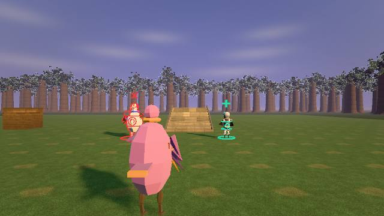
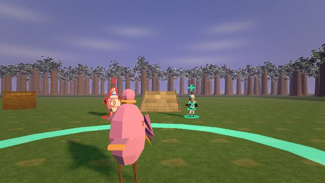

Swan Playable
Support · Playable since Stage 4
Appearance: a smooth white teardrop body sitting low on short legs, a long elegant S-neck, and wings raised in an arch behind the back like a heart; orange bill with a black knob. Reads as "white heart shape with a long neck". (The Flamingo is pink, thin and long-legged; the Swan is white, round and low.)
How to play
Supports keep allies alive and fights fair. Stay close to your carries, heal and shield early, and save your ultimate for the moment the fight turns.
Swan fights with the Lake Lance, which hits instantly. Damage drops off between 20 m and 42 m, and head hits are beak shots worth ×1.65. Every level above 1 is a Molt: +35 max HP per level; +3% gun damage of base per level; +1 Song power per level; +3 melee damage per level.
Abilities
Four abilities. Slots 1 to 3 unlock at level 1, the ultimate at level 6. Each can be upgraded three times, for 1, 2, 5 AP, in order; see Ability Points. The shortest cooldown in the kit is Hiss at 12 s.
1. Grace Link
Tether to an allied hero within 25 m for 8 s (it breaks beyond 35 m): you and the ally each heal 20 + 0.2 x SP per second, and the ally has +10% Talon and Song resist.
- Tier 1 · 1 AP+4 s duration (12 s) duration +4
- Tier 2 · 2 APHeal +10 per second (30 + 0.2 x SP) heal +5
- Tier 3 · 5 APLink a second ally: cast again within the duration (2 charges) +1 charge

2. Hiss
Enemies in an 8 m, 60 degree cone take 50 + 0.5 x SP Song damage, are knocked back 6 m and slowed 30% for 2 s.
- Tier 1 · 1 AP+25 damage (75 + 0.5 x SP) damage +25
- Tier 2 · 2 AP-3 s cooldown cooldown -3 s
- Tier 3 · 5 APAlso disarms 1.0 s disarm +1

3. Lake Glide
For 3 s you get +40% move speed and slows are removed; allies within 6 m get +20% move speed and their slows removed.
- Tier 1 · 1 AP+1 s duration (4 s) duration +1
- Tier 2 · 2 AP-4 s cooldown cooldown -4 s
- Tier 3 · 5 APAllies get the full +40%
4. Swan Song
Allied heroes within 15 m (you included) are undying for 4 s; when it ends each heals 25% of max HP.
- Tier 1 · 1 AP+5 m radius (20 m) radius +5
- Tier 2 · 2 AP+1 s duration (5 s) duration +1
- Tier 3 · 5 AP-40 s cooldown (100 s) cooldown -40 s
Since Stage 4. See all heroes.